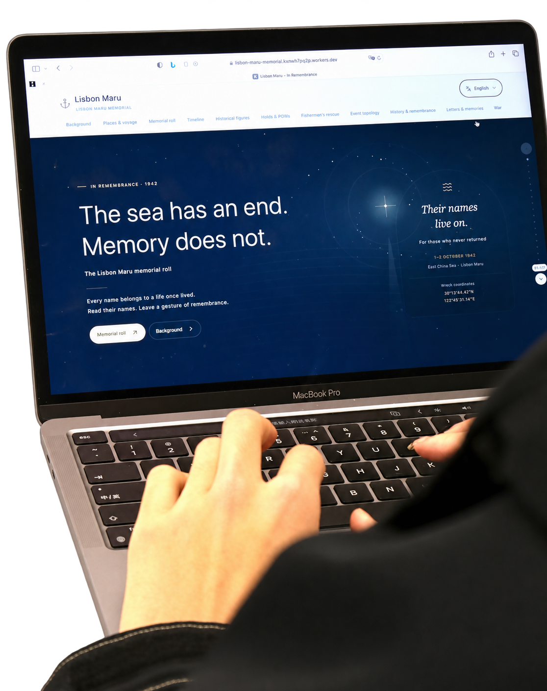

01 / THE INTENTION
历史信息的组织与纪念体验设计
围绕里斯本丸事件，我将历史资料组织为交互纪念网站、数据图表与印刷内容，完成网页视觉与交互呈现，以及海报和卡片设计。
网站以信息层级串联历史叙事与图表，并提供留言、虚拟献花等参与入口；两张 A2 海报与 9 × 9 cm 卡片延续同一主题，让数据关系与纪念体验跨越屏幕和纸张。
- 项目主题
- 里斯本丸纪念与和平
- 我的贡献
- 网页、数据可视化与印刷设计
- 数字成果
- 交互纪念网站
- 印刷成果
- 2 张 A2 海报 + 9 × 9 cm 卡片
- 参与体验
- 探索数据 / 留言 / 虚拟献花
- 设计方法
- 连接屏幕与纸本的历史叙事
HISTORICAL CONTEXT / 1942
里斯本丸号事件：从押运到救援
1942 年 9 月 27 日，日本货船里斯本丸号从香港起航，押运 1,816 名英国战俘前往日本。10 月 1 日，船只在中国浙江舟山海域遭美军潜艇 USS Grouper 鱼雷击中；船身没有标明载有战俘。[1]
日军随后撤离船上的部队，战俘仍被留在舱内，舱口之后被封闭。10 月 2 日，船只沉没，部分战俘破舱逃生。COFEPOW 纪念名录记载，828 人在沉船事件及其直接过程中遇难；这一数字不包含此后在拘押中死亡者。[1][2]
青浜岛、庙子湖岛等地的中国渔民驾小船施救，救起 384 名战俘，并提供食物与庇护。此后，多数获救者再次被日军俘获，三名战俘则在岛民藏匿和帮助下逃脱。这段历史既记录了战争的伤痛，也留下了普通人跨越国界与语言施救的勇气。[3]
- 船上战俘
- 1,816
- 沉船事件遇难者
- 828
- 中国渔民救起
- 384
02 / FROM HISTORY TO EXPERIENCE
连接数据、交互与印刷设计
01VISUALISE
建立历史信息层级
用图表、数据表格与叙事分段组织资料，明确历史背景、数据关系与阅读入口。
02INTERACT
设计参与入口
将历史浏览、留言与虚拟献花连接起来，在页面中组织信息阅读与纪念行动。
03TRANSLATE
延展纸本内容
把关键信息适配为两张 A2 海报与小幅卡片，在不同尺寸下处理内容密度、层级和阅读方式。
03 / DIGITAL & PHYSICAL
9 个视角网站、信息海报与卡片系列
网页体验、海报原稿与印刷成果实拍。点击图片，可放大查看。